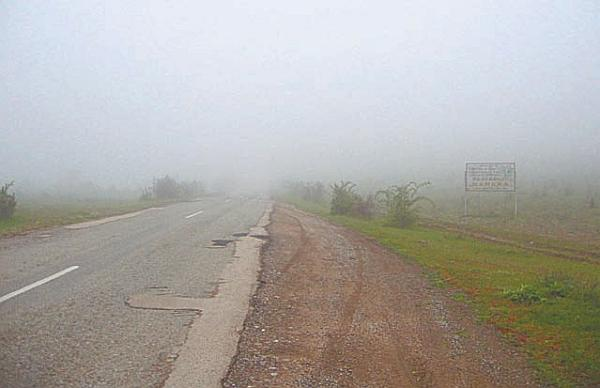

Движение в условиях тумана
Движение в условиях тумана характеризуется тем, что водителю очень трудно (а иногда и невозможно) различать проезжую часть, вовремя обнаруживать других участников движения, замечать дорожные знаки, разметку, а также иные технические средства организации дорожного движения. Это негативно отражается на безопасности всех участников движения (рис. 5.11).

Рис. 5.11. Движение в тумане особенно опасно
ВНИМАНИЕ
Результаты проведенных исследований говорят о том, что вероятность возникновения аварий на дороге многократно увеличивается в условиях тумана.
При движении в тумане каждый водитель должен помнить, что в таком же положении пребывают и другие участники дорожного движения, причем каждый из них может ошибиться в любой момент.
В сильном тумане водитель нередко может более или менее видеть только правый край проезжей части, осевую линию или световые сигналы других транспортных средств. Поэтому в условиях тумана ехать нужно неторопливо и не делать при этом «резких движений». Обгон недопустим ни при каких обстоятельствах, а менять полосу движения можно только при крайней необходимости.
Если все участники дорожного движения отдают себе отчет в том, что они движутся в сложных условиях, и ведут себя осторожно, то вероятность возникновения ДТП намного уменьшается. Но как только кто-то поведет себя неадекватно, дорожная обстановка может мгновенно измениться и стать критической, причем ущерб может быть нанесен и совершенно посторонним участникам движения.
Кстати, отличительной чертой многих аварий, происшедших в условиях тумана, является большое число участников. Это обусловлено тем, что подобные аварии случаются по цепочке, то есть кто-то резко увеличил или замедлил скорость, «выпал» из сложившегося скоростного режима, затем столкнулся с другим автомобилем и на проезжей части появилось препятствие в виде столкнувшихся машин. С этим препятствием вполне могут столкнуться и другие автомобили, так как по причине ограниченного обзора их водители не сумели вовремя его обнаружить.
ПРИМЕЧАНИЕ
Помните, что в тумане для осуществления любого маневра или остановки автомобиля требуется больше времени, чем при движении в обычных условиях.
Все время следите за поведением других участников движения, это позволит вам вовремя отреагировать на изменение дорожной обстановки. Не выпускайте из зоны видимости правый край проезжей части, тротуар, придорожные столбики или ограждения, обочину, линии дорожной разметки, прочие элементы дорожного оборудования.
Не все водители знают, что включение в тумане обычных фар может дать обратный эффект (возникает «световая стена»). В подобной ситуации было бы лучше полностью погасить все приборы внешнего освещения, но это категорически запрещено ПДД, так как автомобиль становится практически невидимым для других участников движения.
В тумане удобнее ехать тем водителям, на машинах которых установлены противотуманные фары. При не самом сильном тумане (в случае, когда в дальнем свете фар зона видимости на дороге составляет не менее 100 метров) можно включить дальний свет одновременно с «противотуманками» (правда, при появлении встречных машин придется переключиться на ближний свет фар). В условиях тумана средней плотности нужно использовать противотуманные фары вместе с ближним светом фар. При густом тумане пользуйтесь только «противотуманками».
ВНИМАНИЕ
Не забывайте, что при движении в тумане запрещено перестраиваться без крайней необходимости, обгонять, ехать по трамвайным путям и выполнять буксировку механических транспортных средств.
В условиях тумана иногда бывает полезно пристроиться за движущимся впереди транспортным средством, которое своим движением будет хоть как-то «разгонять» туман, но при этом всегда соблюдайте безопасную дистанцию и не подъезжайте слишком близко, иначе, если передний автомобиль резко затормозит, можно не успеть остановиться. Помните, что если видимость на дороге не превышает 10 метров, то ехать можно со скоростью не выше 5 километров в час. Иначе вы подвергаете опасности не только себя, но и других участников движения.
При встречном разъезде в условиях тумана ведите машину как можно ближе к правому краю проезжей части. Учтите, что встречный автомобиль может транспортировать недостаточно обозначенный и поэтому практически незаметный крупногабаритный груз, выступающий по сторонам, а это опасно. Если по встречной полосе едет транспортное средство только с одной горящей фарой, не стоит забывать, что это не обязательно мотоцикл. Таким транспортным средством вполне может оказаться автомобиль с неработающей фарой.